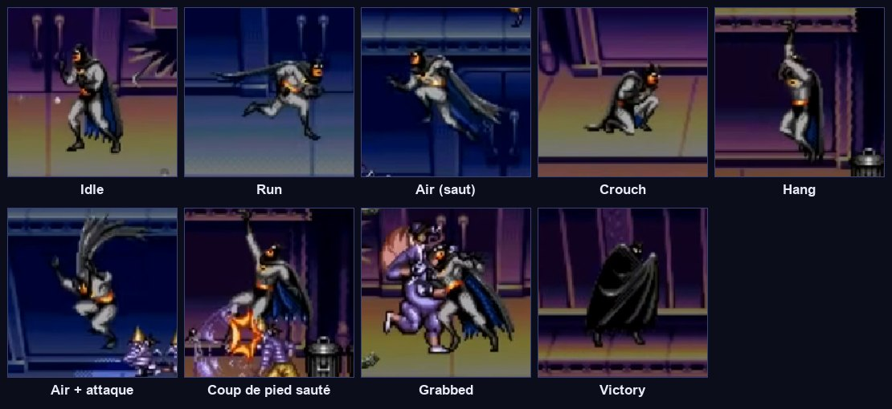
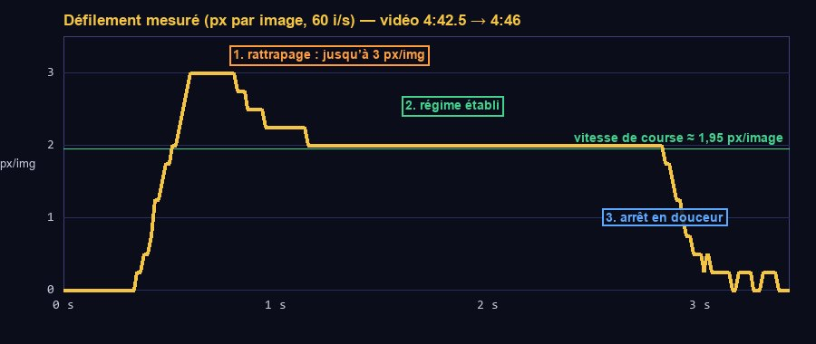

Machine à états et caméra
On réécrit Batman proprement : un script principal qui offre des « verbes » (courir, sauter…), et un petit script par état qui décide quoi en faire. Puis une caméra qui suit Batman comme dans le jeu original : en douceur, en anticipant, sans jamais reculer.
Ce que tu vas apprendre
Godot 4
class_namesur un personnage,@export_group- Les groupes de nœuds
AnimatedSprite2DetSpriteFramesCamera2D,make_current()- Modifier les couches de collision par le code
Développement de jeu
- La machine à états appliquée à un personnage
- Séparer les données, les verbes et les décisions
- Coyote time et mémoire de saut
- L'affichage de débogage
- La caméra lissée avec anticipation
Le plan
4.1 · Dessiner le graphe d'états

Avant de coder une machine à états, on la dessine : des boîtes (les états) et des flèches (les transitions, avec leur condition). Sur papier, une flèche manquante se voit tout de suite ; dans le code, elle devient un bug « le personnage reste bloqué ». Recopie ce schéma dans ton journal.
┌──────── saut ────────┐
┌─────┐ ◄──► ┌─────┐ ▼
│ Idle│ croix │ Run │ ── plus de sol ─►┌─────┐
└──┬──┘ └─────┘ │ Air │ ── sol ──► Idle / Run
bas │ ▲ └─────┘
▼ │ bas relâché ▲
┌────────┐ ─────── bas + saut (descendre du balcon) ──┘
│ Crouch │
└────────┘
Cette étape construit ces quatre états. L'étape 05 ajoutera Melee, Hang, Hurt, Grabbed, Dead et Victory.
On sépare trois choses. Les données (vitesse, gravité…) et les verbes (run(), jump(), apply_gravity()) vivent dans player.gd. Les décisions (« si le joueur appuie sur saut et que je suis au sol, alors je saute et je passe en l'air ») vivent dans les états. Un état ne réimplémente jamais un saut : il appelle p.jump(). Si tu modifies le saut, tu le fais à un seul endroit.
La scène
4.2 · Créer player.tscn
- Nouvelle scène, racine
CharacterBody2DrenomméePlayer. Couche 3 seule, masque 1 et 2. Enregistre enres://player/player.tscn. - Construis l'arbre ci-dessous. Pour
Sprite: unAnimatedSprite2D, offset y = -24, laissé sansSpriteFramespour l'instant. Le rectanglePlaceholderest un enfant duSprite: quand le sprite sera masqué (clignotement d'invincibilité, étape 05), le rectangle le sera aussi. - Sous
StateMachine, crée quatre nœudsNodenommés exactementIdle,Run,Crouch,Air. Les noms comptent : ils servent d'identifiants. - Sélectionne
StateMachine: dans l'Inspecteur, Initial State =Idle. - Sélectionne
Player→ onglet Nœud → Groupes → ajoute le groupeplayer.
Player (CharacterBody2D) couche 3 · masque 1+2 · groupe « player »
├── Sprite (AnimatedSprite2D) offset y = -24 (vide pour l'instant)
│ └── Placeholder (ColorRect) 14×36 · position (-7, -36) · bleu nuit
├── Body (CollisionShape2D) rectangle 14×36, position (0, -18)
├── StateDebug (Label) position (-30, -52) · taille 60×10 · voir 4.6
└── StateMachine (StateMachine) initial_state = Idle
├── Idle (Node)
├── Run (Node)
├── Crouch (Node)
└── Air (Node)Un groupe est une étiquette posée sur des nœuds. N'importe quel script peut ensuite demander « donne-moi le nœud du groupe player » : get_tree().get_first_node_in_group("player"). Les ennemis trouveront Batman ainsi, sans connaître sa place dans l'arbre.
Le code
4.3 · player.gd, version 1
Attache ce script à Player. C'est une version réduite au déplacement ; l'étape 05 la complètera jusqu'à la version de référence du guide.
Comprendre le code
class_name Player: les états pourront écrirevar p: Player = owneret profiter de l'autocomplétion sur tous les verbes.@export_group("Déplacement"): range les exports sous un titre repliable dans l'Inspecteur._physics_processfait trois choses, toujours dans cet ordre : mettre à jour les minuteries, laisser l'état courant décider develocity, puis déplacer avecmove_and_slide(). Aucun état n'appellemove_and_slide(): il n'y a qu'un seul endroit où Batman bouge.- Coyote time (
_coyote) : pendant 0,06 s après avoir quitté un bord, le saut est encore accepté. Mémoire de saut (_buffer) : un appui 0,1 s avant l'atterrissage est gardé en mémoire et exécuté au contact du sol. Ce sont deux conforts modernes ; mets-les à 0 pour un ressenti strict de 1995. set_collision_mask_value(2, false): retire la couche 2 du masque, donc Batman traverse le balcon. Un compteur la remet après 0,25 s. On décale aussi Batman de 2 px vers le bas, pour qu'il ne soit plus posé sur la plateforme quand le masque revient.play_anim()ne plante pas s'il n'y a pas encore d'animations : on peut avancer avec le rectangle bleu.
4.4 · Les états Idle et Run
Crée res://player/states/, puis ces deux scripts. Attache chacun au nœud du même nom sous StateMachine.
Comprendre le code
- Le motif « vérifier puis sortir » : chaque condition de sortie est testée dans l'ordre de priorité ; dès qu'une transition est demandée,
return. Ce qui reste en bas de la fonction, c'est le comportement « normal » de l'état. - L'ordre est une décision de game design : dans
Idle, « tomber » passe avant « s'accroupir », qui passe avant « sauter ». - Chaque fichier fait moins de 30 lignes et ne parle que de sa situation. Compare avec le prototype version 2.
4.5 · Les états Crouch et Air
velocity.y >= 0Au tick du saut, Batman est encore au sol (is_on_floor() vaut vrai jusqu'au prochain move_and_slide()). Sans cette condition, l'état Air déciderait aussitôt qu'il a atterri. On exige donc qu'il soit en train de descendre.
4.6 · Voir l'état en direct
Une machine à états est invisible : quand Batman se comporte mal, il faut savoir dans quel état il est. Les développeurs ajoutent des affichages de débogage partout : état courant, vitesse, zones de collision. On les retire (ou on les cache) à la fin.
- Sur le
LabelStateDebug: Horizontal Alignment = Center, Theme Overrides → Font Sizes → Font Size = 8. - Attache-lui ce script, puis, dans l'Inspecteur, désigne
Playerdans le champ Player :
- Ouvre
test_room.tscn, glisseplayer.tscndedans, en (200, 100) : sur le balcon. - F6.
- Au départ : « Idle → », sur le balcon.
- Cours : « Run ». Tombe du bord du balcon : « Air », puis « Idle » au sol.
- Juste après avoir quitté le bord, un saut reste possible (coyote time).
- Remonte sur le balcon en modifiant temporairement
jump_velocityà -450 dans l'Inspecteur. Bas : « Crouch ». Bas + saut : Batman traverse le balcon et retombe dans la rue. Remets -330. - Bas sur le sol de la rue + saut : rien ne se passe, la couche « monde » ne se traverse pas.
- « Invalid get index 'apply_gravity' (on base: 'null instance') » : un état n'arrive pas à récupérer Batman. Le script d'état est-il attaché à un enfant de
StateMachinedansplayer.tscn, et non dans la salle de test ?ownerdésigne la racine de la scène où le nœud a été créé. - « État inconnu : Air » : le nœud ne s'appelle pas exactement
Air(majuscule, espace en trop). - Batman tombe à travers le sol : son masque ne contient pas la couche 1, ou le sol n'est pas sur la couche 1.
- Batman ne bouge pas du tout :
Initial Stateest vide et le premier enfant n'est pas un état, ou le scriptplayer.gdn'est pas attaché.
La caméra
4.7 · Observer la caméra originale

Regarde 4:42 au ralenti : quand Batman se met à courir, l'écran accélère progressivement ; quand il s'arrête, l'écran continue un peu et freine en douceur. Batman n'est pas au centre de l'écran : il y a plus de place devant lui que derrière. Et l'écran ne revient jamais en arrière.
Une caméra collée au joueur donne mal au cœur et cache ce qui arrive. La caméra vise un point devant le joueur (look-ahead) et s'en rapproche à chaque image d'une fraction de la distance restante (lissage exponentiel). Elle rattrape vite quand elle est loin, et ralentit en approchant.
4.8 · camera_rig.gd
Crée res://level/camera_rig.gd (hérite de Camera2D) :
Ce script écrit target.camera : il faut ajouter cette variable à player.gd, et faire en sorte que Batman reste dans l'écran. Deux ajouts :
Player parle de CameraRig et CameraRig parle de Player. Tant que l'un des deux fichiers n'existe pas ou n'est pas enregistré, l'autre affiche « Could not find type ». Enregistre les deux (Ctrl Maj S / ⌘ Maj S : tout enregistrer) : l'erreur disparaît. Les références croisées entre classes sont permises dans Godot 4.
Comprendre le code
1.0 - exp(-follow_rate * delta): la fraction de distance parcourue à chaque tick.lerp(x, cible, 0.1)à chaque image irait deux fois plus vite à 120 Hz qu'à 60 Hz ; cette forme donne la même courbe quelle que soit la fréquence. Garde ce réflexe chaque fois que tu « rattrapes » une valeur.maxf(next, x): on garde la plus grande des deux positions, donc la caméra n'avance que vers la droite.lock_on()etunlock()serviront aux arènes de l'étape 07 : l'écran se fige pendant le combat.clamp_to_view(): la caméra ne reculant pas, Batman ne doit pas pouvoir sortir par la gauche.fixed_y: les trois sections du niveau 1 ne défilent jamais verticalement. Une seule ligne suffit à le garantir.
4.9 · Une salle plus longue pour tester
- Dans
test_room.tscn, agrandis le sol :Flooren (1000, 208), rectangle de collision 2000×16,ColorRect2000×16 en (-1000, -8). - Ajoute un
Node2DnomméMarkersavec quelquesColorRectverticaux (4×60) tous les 160 px, posés sur le sol : ce sont tes « réverbères » pour voir défiler l'écran. - Sélectionne la
Camera2D, attache-luicamera_rig.gd, et mets Target =Player. - Replace
Playerau sol, en (60, 200). - F6.
- En courant à droite, l'écran accélère en douceur et Batman se retrouve un peu à gauche du centre.
- À l'arrêt, l'écran glisse encore un peu puis s'arrête.
- En courant à gauche, l'écran ne recule pas, et Batman bute contre le bord gauche.
- Expériences :
follow_rateà 20 (caméra collée), à 1 (caméra molle) ;look_aheadà 0 ;forward_onlydécoché.
Grâce au snap au pixel réglé à l'étape 01, la position à virgule de la caméra ne fait pas trembler les pixels.
Point de contrôle
- Batman court à ~117 px/s, s'arrête net, saute plus ou moins haut selon la durée d'appui.
- Il s'accroupit, et descend du balcon avec bas + saut.
- L'étiquette de débogage affiche le bon état à tout moment.
- La caméra anticipe dans le sens de la course, ne recule pas, et Batman ne peut pas sortir par la gauche.
Ce que tu retiens
Pourquoi aucun état n'appelle-t-il move_and_slide() ?
Pour qu'il n'y ait qu'un seul endroit où Batman se déplace : player.gd, après que l'état a décidé de velocity. Si deux états l'appelaient, on risquerait de déplacer deux fois par tick lors d'une transition.
Que fait le coyote time, et pourquoi existe-t-il ?
Il accepte un saut quelques centièmes de seconde après que le personnage a quitté le bord. Le joueur a l'impression d'avoir sauté à temps ; sans lui, le jeu paraît injuste, car l'œil humain ne perçoit pas une image de retard.
Pourquoi 1 - exp(-k × delta) plutôt qu'une constante comme 0,1 ?
Une constante appliquée à chaque image dépend du nombre d'images par seconde : la caméra irait plus vite sur un écran 144 Hz. La forme exponentielle donne la même trajectoire quel que soit delta.
Tu ajoutes un état Slide. Quels fichiers modifies-tu ?
Tu crées slide.gd et un nœud Slide sous StateMachine, puis tu ajoutes la transition dans l'état d'où on y entre (par exemple Run). Aucun autre état ne change. C'est tout l'intérêt de la machine à états.
Pour aller plus loin
- Affiche aussi
velocitydans l'étiquette de débogage, arrondie à l'entier. - Mets
coyote_timeetjump_bufferà 0, joue deux minutes, puis remets-les. Note la différence dans ton journal. - Lis la section caméra du tome 03.